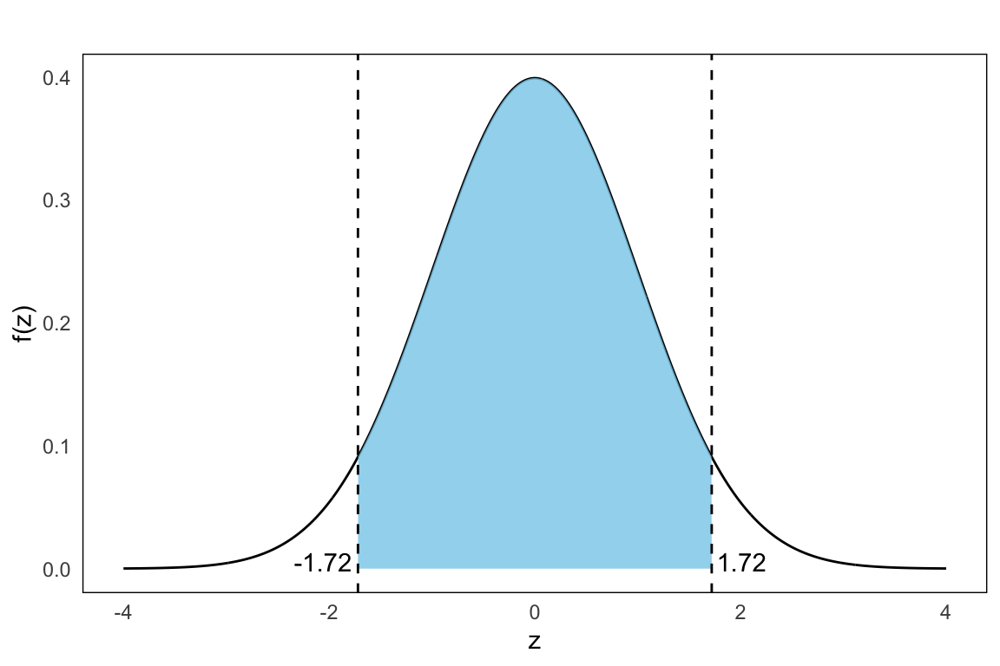

18 Sampling Distributions for a Sample Proportion
In many applications, we are interested not in the mean of a variable, but in the proportion of units in a population that possess a certain characteristic, for example, the proportion of voters who support a candidate, or the proportion of products that are defective.
18.1 The Proportion as a Random Variable
Let \(p\) denote the true proportion in the population of units with a characteristic \(A\). We consider two equivalent situations:
- A random sample of size \(n\) is drawn from a large (finite) population, where \(p\) is the proportion of \(A\)-units.
- We perform \(n\) independent trials, each with probability \(p\) of “success” (i.e., observing \(A\)). In this case, \(X \sim \text{Bin}(n, p)\).
In both cases, we define the sample proportion as:
\[ \hat{p} = \frac{X}{n} \]
where \(X\) is the number of observed “successes” in the sample.
In fact, the sample proportion \(\hat{p}\) can be viewed as a sample mean of 0/1 variables, where each observation equals 1 if the characteristic is present and 0 otherwise.
18.2 Properties of the Sampling Distribution
Because \(\hat{p}\) depends on the outcomes of a random process, it is itself a random variable. Its distribution is called the sampling distribution of the sample proportion.
This distribution describes how the sample proportion \(\hat{p}\) would vary from sample to sample due to randomness. Just like the sample mean, the sample proportion has a mean and variance:
Expected value: \[ E(\hat{p}) = p \]
Variance: \[ \operatorname{Var}(\hat{p}) = \frac{p(1 - p)}{n} \]
These results follow from properties of the binomial distribution (see Section 13.6). If \(X \sim \text{Bin}(n, p)\), then: \[ E(X) = np \quad \text{and} \quad \operatorname{Var}(X) = np(1 - p) \]
Then: \[ E\left(\frac{X}{n}\right) = \frac{E(X)}{n} = \frac{np}{n} = p \] \[ \operatorname{Var}\left(\frac{X}{n}\right) = \frac{\operatorname{Var}(X)}{n^2} = \frac{np(1 - p)}{n^2} = \frac{p(1 - p)}{n} \]
18.3 Normal Approximation of the Sample Proportion
Under certain conditions, the distribution of \(\hat{p}\) can be approximated by a normal distribution. This is particularly useful for calculating probabilities.
The approximation holds when the sample is sufficiently large. A common rule of thumb is:
\[ np(1 - p) > 5 \]
If this holds, we can write:
\[ \hat{p}\overset{\text{apx}}{\sim} \mathcal{N}\left(p, \frac{p(1 - p)}{n}\right) \] This follows from the fact that the sample proportion \(\hat{p}\) can be viewed as a sample mean of binary variables, justifying the use of Central Limit Theorem covered in the next chapter Chapter 19.
Example: 18.1: Electrical Installations in Old Houses
In a large population of older houses, 30% are known to have faulty electrical installations. We take a simple random sample of \(n = 250\) houses. What is the probability that the sample proportion \(\hat{p}\) falls between 0.25 and 0.35? Let’s have a look at the given:
- True population proportion: \(p = 0.30\)
- Sample size: \(n = 250\)
- Target interval: \(0.25 \leq \hat{p} \leq 0.35\)
Since we’re dealing with a sample proportion, the random variable \(\hat{p} = X/n\) has:
- Expected value: \(E(\hat{p}) = p = 0.30\)
- Variance: \(\operatorname{Var}(\hat{p}) = \frac{p(1 - p)}{n} = \frac{0.3 \cdot 0.7}{250} = 0.00084\)
- Standard deviation (standard error): \(\sqrt{0.00084} \approx 0.029\) We check:
\[ np(1 - p) = 250 \cdot 0.3 \cdot 0.7 = 52.5 > 5 \]
This confirms that we can approximate the sampling distribution of \(\hat{p}\) using a normal distribution. Next, we standardize the bounds and convert 0.25 and 0.35 to \(Z\)-scores:
\[ Z_1 = \frac{0.25 - 0.30}{0.029} \approx -1.72 \\ Z_2 = \frac{0.35 - 0.30}{0.029} \approx 1.72 \]
Now the probaiblity area we seek is given by as shown in the plot below: \[ P(0.25 \leq \hat{p} \leq 0.35) = P(-1.72 \leq Z \leq 1.72) \]
From the standard normal table (Appendix A) we get \[ \Phi(1.72) \approx 0.957,\quad \Phi(-1.72) \approx 1-\Phi(1.72) = 0.043 \]
which implies that \[ P(-1.72 \leq Z \leq 1.72) = 0.957 - 0.043 = 0.914 \] In conclusion, there is about a 91% probability that the sample proportion will fall between 25% and 35%. This reflects the natural variability of proportions in random samples, and highlights how the sampling distribution of \(\hat{p}\) allows us to make probabilistic statements about sample outcomes.
Exercises
- A political poll finds that 55% of voters in a population support a new environmental policy. A journalist takes a random sample of 200 people from the population. What is the probability that fewer than the majority in the sample supports the policy?
Solution
We seek the probability that the sample proportion is less than 0.5, that is \(P(\hat{p} \leq 0.5)\). We are given:
- \(p = 0.55\)
- \(n = 200\)
Check conditions: \[ np(1 - p) = 200 \cdot 0.55 \cdot 0.45 = 49.5 > 5 \quad \text{so we can use normal approx.} \]
Standard error: \[ \text{SE} = \sqrt{ \frac{0.55 \cdot 0.45}{200} } \approx 0.035 \]
Standardize: \[ Z = \frac{0.50 - 0.55}{0.035} \approx -1.43 \]
\[ P(\hat{p} \leq 0.50) = P(\hat{p} < 0.50) = P(Z < -1.43) \approx 0.0764 \]
There’s about a 7.6% chance the sample shows less than 50% support.
- In a large batch of manufactured items, 4% are defective. An inspector takes a sample of 100 items. What is the probability that more than 5% of the sample is defective?
Solution
Given:
- \(p = 0.04\)
- \(n = 100\)
Check: \[ np(1 - p) = 100 \cdot 0.04 \cdot 0.96 = 3.84 \lt 5 \quad \text{not large enough for normal approx.} \]
The normal approximation should not be used here. Use exact binomial calculation instead:
\[ P(X > 5) = 1 - P(X \leq 5)= 1 - \sum_{k=0}^{5} P(X = k), \qquad X \sim \text{Bin}(100, 0.04) \] Recall the binomial probability formula: \[ P(X = k) = \binom{n}{k} p^k (1 - p)^{n - k} = \binom{100}{k} (0.04)^k (0.96)^{100 - k} \] Compute each term from \(k = 0\) to \(k = 5\) using this formula: \[ \begin{aligned} P(X = 0) &= \binom{100}{0} (0.04)^0 (0.96)^{100} = 1 \cdot 1 \cdot 0.01687 = \mathbf{0.0169} \\\\ P(X = 1) &= \binom{100}{1} (0.04)^1 (0.96)^{99} = 100 \cdot 0.04 \cdot 0.01757 = \mathbf{0.0703} \\\\ P(X = 2) &= \binom{100}{2} (0.04)^2 (0.96)^{98} = 4950 \cdot 0.0016 \cdot 0.01831 = \mathbf{0.1450} \\\\ P(X = 3) &= \binom{100}{3} (0.04)^3 (0.96)^{97} = 161700 \cdot 0.000064 \cdot 0.01909 = \mathbf{0.1973} \\\\ P(X = 4) &= \binom{100}{4} (0.04)^4 (0.96)^{96} = 3921225 \cdot 0.00000256 \cdot 0.01989 = \mathbf{0.1994} \\\\ P(X = 5) &= \binom{100}{5} (0.04)^5 (0.96)^{95} = 75287520 \cdot 0.0000001024 \cdot 0.02073 = \mathbf{0.1595} \end{aligned} \]
Now we sum these:
\[ \begin{aligned} P(X \leq 5) &= 0.0169 + 0.0703 + 0.1450 + 0.1973 + 0.1994 + 0.1595 \\ &= 0.7884 \end{aligned} \]
Final answer is then:
\[ P(X > 5) = 1 - P(X \leq 5) = 1 - 0.7884 = \boxed{0.2116} \]
There is approximately a 21.16% chance of observing more than 5 defective items in a random sample of 100 when the defect rate is 4%. Using the normal approximation (with or without continuity correction), the result is close:
\[ P(X > 5) \approx 0.2206 \].
Thus, the normal approximation slightly overestimates the true probability in this case, which can happen when \(np = 4\) is near the lower bound for the normal approximation’s reliability.